Hồ Tuyền Lâm – thiên đường thơ mộng giữa núi rừng Đà Lạt

Mục lục bài viết
- 1. Giới thiệu về Hồ Tuyền Lâm Đà Lạt
- 2. Du lịch Hồ Tuyền Lâm mùa nào đẹp?
-
3. Những hoạt động không thể bỏ lỡ khi du lịch Hồ Tuyền Lâm Đà Lạt
- 3.1. Du ngoạn Hồ Tuyền Lâm bằng du thuyền – Trải nghiệm thư giãn giữa thiên nhiên
- 3.2. Chèo SUP, kayak khám phá vẻ đẹp hoang sơ của Hồ Tuyền Lâm
- 3.3. Câu cá Hồ Tuyền Lâm – Vừa thư giãn vừa thưởng thức chiến lợi phẩm
- 3.4. Cắm trại và picnic bên bờ Hồ Tuyền Lâm – Tận hưởng không gian xanh mát
- 3.5. Leo núi Pinhatt – Góc nhìn toàn cảnh Hồ Tuyền Lâm từ trên cao
- 3.6. Khám phá đập tràn Hồ Tuyền Lâm – Góc sống ảo ẩn mình
- 3.7. Ngắm hoàng hôn Hồ Tuyền Lâm – Thời khắc lãng mạn khó quên
- 3.8. Check-in cây cầu gỗ Hồ Tuyền Lâm – Biểu tượng sống ảo nổi tiếng
- 3.9. Thử sức tại sân golf bên Hồ Tuyền Lâm – Trải nghiệm thể thao đẳng cấp
- 4. Những khách sạn, resort bên Hồ Tuyền Lâm có view đẹp và không gian nghỉ dưỡng lý tưởng
- 5. Ăn gì ở khu vực Hồ Tuyền Lâm? Những nhà hàng, quán ăn ngon không nên bỏ lỡ
- 6. Gần Hồ Tuyền Lâm có gì chơi? Những địa điểm du lịch nên kết hợp tham quan
- 7. Một số thắc mắc thường gặp khi du lịch Hồ Tuyền Lâm
- 8. Gợi ý tiệm nướng cực chill gần Hồ Tuyền Lâm
Hồ Tuyền Lâm Đà Lạt là hồ nước ngọt nhân tạo nằm yên bình ở vùng ven thành phố, gần khu vực đèo Prenn. Với diện tích rộng lớn, cảnh quan hữu tình và không khí mát mẻ quanh năm, nơi đây nhanh chóng trở thành điểm đến yêu thích của du khách mỗi khi ghé thăm thành phố ngàn hoa. Khung cảnh thiên nhiên hòa quyện giữa núi rừng và mặt hồ tĩnh lặng tạo nên một không gian lý tưởng để thư giãn và tận hưởng vẻ đẹp nguyên sơ.
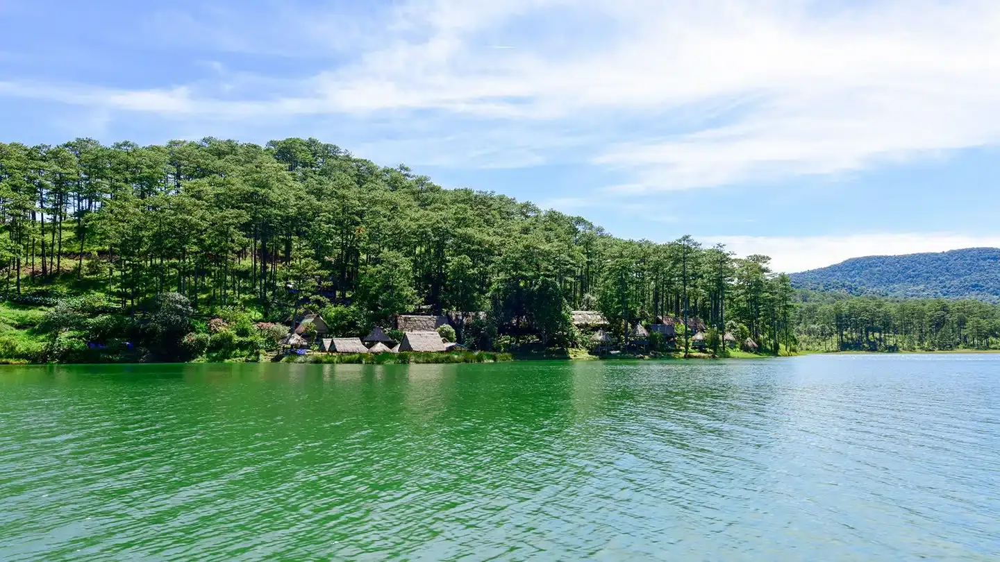
Không chỉ sở hữu vẻ đẹp thơ mộng, Hồ Tuyền Lâm Đà Lạt còn mang đến nhiều trải nghiệm hấp dẫn như chèo thuyền, cắm trại, picnic, câu cá hay đơn giản là dạo bộ ven hồ để hít thở bầu không khí trong lành. Bên cạnh đó, du khách còn có cơ hội thưởng thức đặc sản địa phương tại các nhà hàng nổi tiếng nằm rải rác quanh khu vực hồ, tạo nên hành trình khám phá trọn vẹn cả về cảnh sắc lẫn ẩm thực.
1. Giới thiệu về Hồ Tuyền Lâm Đà Lạt
Hồ Tuyền Lâm Đà Lạt tọa lạc tại Khu du lịch Quốc gia hồ Tuyền Lâm, thuộc phường 4, thành phố Đà Lạt. Đây là hồ nước nhân tạo lớn nhất của thành phố với tổng diện tích lên đến 360 ha. Hồ mở cửa đón khách tham quan cả ngày và hoàn toàn miễn phí, rất thuận tiện cho du khách đến trải nghiệm bất kỳ thời điểm nào trong năm.
Không gian quanh hồ được bao phủ bởi rừng thông bạt ngàn và hệ thực vật xanh tươi, tạo nên khung cảnh thiên nhiên hữu tình, hòa quyện giữa núi non và mặt nước trong xanh. Chính vì thế, nơi đây được ví như “lá phổi xanh” của Đà Lạt, là điểm đến lý tưởng để thư giãn, hít thở không khí trong lành và hòa mình vào thiên nhiên.
Theo người dân địa phương, vùng đất này được một người Pháp phát hiện vào những năm 1930. Trong kháng chiến chống Mỹ, nơi đây từng là căn cứ địa cách mạng với tên gọi Khu Quang Trung hay Khu Suối Tía.
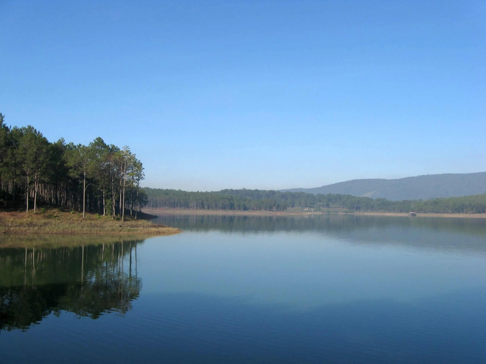
Đến năm 1987, sau khi đất nước thống nhất, Ty Thủy lợi Lâm Đồng đã tiến hành xây dựng một con đập dài 235m để chắn dòng Suối Tía, tạo nên hồ nước nhân tạo rộng lớn. Ban đầu, hồ được đặt tên là Hồ Quang Trung, sau này mới được đổi tên thành Hồ Tuyền Lâm như hiện nay.
Với giá trị lịch sử và cảnh quan đặc biệt, năm 1988, khu vực này được công nhận là Di tích lịch sử – văn hóa cấp Quốc gia. Đến năm 2017, hồ tiếp tục được nâng tầm khi trở thành Khu du lịch Quốc gia, thu hút hàng triệu lượt du khách trong và ngoài nước. Hiện tại, Hồ Tuyền Lâm do SAM Đà Lạt trực tiếp quản lý và phát triển, trở thành điểm đến không thể thiếu trong hành trình khám phá Đà Lạt mộng mơ.
2. Du lịch Hồ Tuyền Lâm mùa nào đẹp?
Thời gian lý tưởng nhất để du lịch Hồ Tuyền Lâm Đà Lạt là vào mùa khô, kéo dài từ khoảng tháng 11 đến tháng 6 năm sau. Trong khoảng thời gian này, tiết trời khô ráo, không quá lạnh và ít mưa, rất thích hợp để tham gia các hoạt động ngoài trời như cắm trại, câu cá, chèo thuyền, hoặc ghi lại những khoảnh khắc “sống ảo” tuyệt đẹp bên hồ và rừng thông.
Tuy nhiên, vào mùa mưa (từ tháng 5 đến tháng 9), hồ Tuyền Lâm lại khoác lên mình một vẻ trầm mặc và thơ mộng khác biệt. Dù thời tiết có phần se lạnh và có mưa rải rác, nhưng chính điều này lại tạo nên một không gian yên bình – rất lý tưởng để bạn nghỉ dưỡng, thưởng thức cà phê nóng bên ô cửa sổ, hay cùng bạn bè quây quần bên bếp nướng hoặc nồi lẩu nghi ngút khói.
Dù đến vào mùa nào, Hồ Tuyền Lâm Đà Lạt vẫn luôn mang đến những trải nghiệm thú vị và những cung bậc cảm xúc riêng cho du khách yêu thiên nhiên và sự yên tĩnh.
3. Những hoạt động không thể bỏ lỡ khi du lịch Hồ Tuyền Lâm Đà Lạt
Không chỉ nổi bật với vẻ đẹp yên bình và không khí trong lành, Hồ Tuyền Lâm Đà Lạt còn là nơi mang đến những trải nghiệm đa dạng và đáng nhớ. Dưới đây là những hoạt động du khách nhất định phải thử khi đặt chân đến thiên đường xanh này.
3.1. Du ngoạn Hồ Tuyền Lâm bằng du thuyền – Trải nghiệm thư giãn giữa thiên nhiên
Dạo quanh Hồ Tuyền Lâm trên du thuyền là cách tuyệt vời để tận hưởng trọn vẹn vẻ đẹp của nơi đây. Mỗi buổi sáng, mặt hồ phẳng lặng như gương, phản chiếu những tán thông và bầu trời trong xanh. Du khách có thể thong thả ngồi trên thuyền, lắng nghe tiếng nước khẽ vỗ và tận hưởng làn gió mát lành len lỏi qua từng kẽ tóc.
Mùa lá phong đổi màu hoặc những ngày trời trong là thời điểm tuyệt vời nhất để bạn ngắm cảnh. Giá thuê thuyền dao động khoảng 300.000 – 500.000 VNĐ, chở được khoảng 10–15 người, rất phù hợp cho nhóm bạn hoặc gia đình.
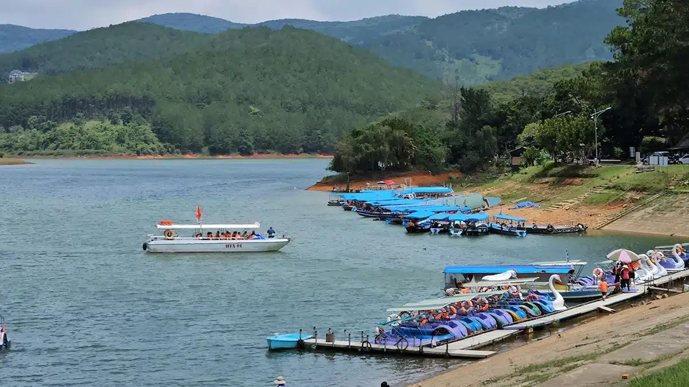
3.2. Chèo SUP, kayak khám phá vẻ đẹp hoang sơ của Hồ Tuyền Lâm
Một hoạt động mang đậm tinh thần khám phá mà du khách trẻ rất yêu thích tại Hồ Tuyền Lâm chính là chèo thuyền kayak hoặc SUP. Những chiếc thuyền nhỏ giúp bạn len lỏi vào các ngách hồ, men theo rừng thông hoặc rừng phong đỏ đang chuyển lá vào cuối thu.
Dưới sự hướng dẫn của người có kinh nghiệm, bạn sẽ vừa được học kỹ năng chèo thuyền, vừa có thể thả mình vào không gian bao la của hồ nước và núi rừng. Với người yêu thiên nhiên và thích cảm giác mới mẻ, đây là trải nghiệm “đáng đồng tiền bát gạo”.
3.3. Câu cá Hồ Tuyền Lâm – Vừa thư giãn vừa thưởng thức chiến lợi phẩm
Không cần đầu tư nhiều, chỉ cần một chiếc cần câu đơn giản, bạn đã có thể trải nghiệm hoạt động câu cá miễn phí tại Hồ Tuyền Lâm. Hồ có nhiều loại cá nước ngọt, và không gian tĩnh lặng sẽ giúp bạn thư giãn, hòa mình vào nhịp sống chậm rãi nơi núi rừng.
Điều đặc biệt là bạn có thể nhờ các nhà hàng xung quanh chế biến ngay chiến lợi phẩm mình câu được thành những món ăn dân dã, tươi ngon – một trải nghiệm vừa vui vừa đậm đà bản sắc địa phương.
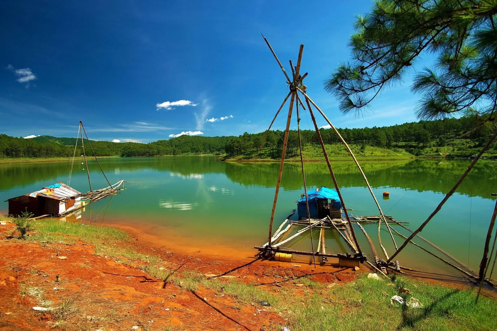
3.4. Cắm trại và picnic bên bờ Hồ Tuyền Lâm – Tận hưởng không gian xanh mát
Hồ Tuyền Lâm là một trong những địa điểm cắm trại, picnic lý tưởng nhất tại Đà Lạt. Với nhiều khoảng đất trống bằng phẳng bên hồ, bạn có thể dễ dàng dựng lều, tổ chức nướng BBQ, đốt lửa trại và ngắm trăng sao bên mặt nước yên ả.
Buổi sáng, khi sương còn lững lờ trên mặt hồ, mở lều ra đã thấy ánh bình minh rọi qua những tán cây – đó sẽ là khoảnh khắc khó quên trong chuyến đi. Chi phí cắm trại không quá đắt, dao động khoảng 1.200.000 VNĐ/đêm cho nhóm 5–7 người.
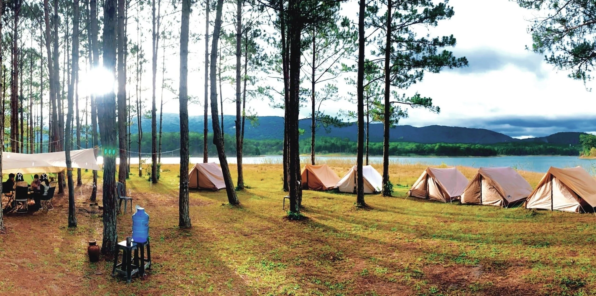
3.5. Leo núi Pinhatt – Góc nhìn toàn cảnh Hồ Tuyền Lâm từ trên cao
Nếu bạn là người thích vận động và khám phá, hãy thử leo núi Pinhatt – một ngọn núi cao thuộc khu vực Hồ Tuyền Lâm. Đường đi chưa quá đông khách, vẫn giữ được sự hoang sơ, rất phù hợp với các phượt thủ và người ưa trải nghiệm độc đáo.
Từ đỉnh núi, bạn có thể phóng tầm mắt ra toàn cảnh hồ rộng lớn và thành phố Đà Lạt phía xa mờ trong sương. Hãy chuẩn bị trang phục thoải mái, nước uống, đồ ăn nhẹ và đừng quên máy ảnh – vì cảnh vật ở đây chắc chắn sẽ khiến bạn muốn lưu giữ mãi.
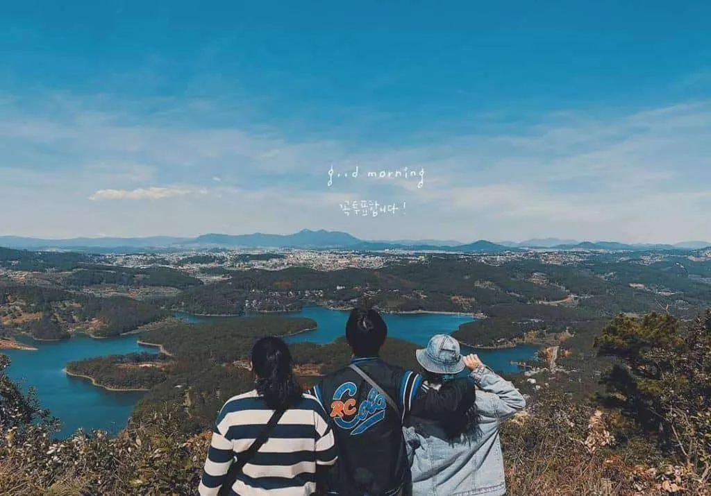
3.6. Khám phá đập tràn Hồ Tuyền Lâm – Góc sống ảo ẩn mình
Đập tràn Hồ Tuyền Lâm không phải là điểm du lịch phổ biến, nhưng lại là tọa độ “ẩn giấu” dành cho những ai yêu sự tĩnh lặng và khung cảnh hoang sơ. Con đập nằm sâu trong rừng thông, bao quanh là lau sậy và cây xanh rì rào, tạo nên khung cảnh lãng mạn như trong phim.
Nếu bạn là người thích chụp ảnh, nơi này chắc chắn là “background” tuyệt vời với ánh sáng dịu nhẹ, tiếng nước chảy róc rách và bầu không khí trong lành. Hãy đến vào buổi sáng sớm hoặc chiều muộn để bắt được khoảnh khắc đẹp nhất.
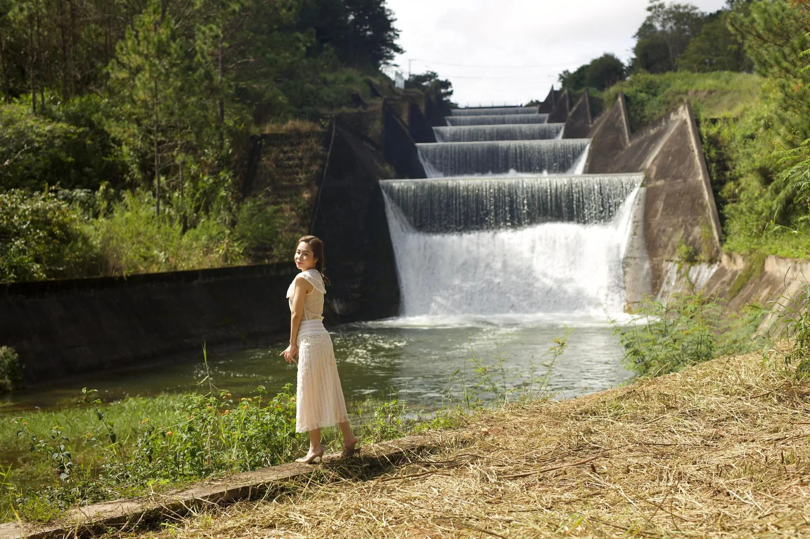
3.7. Ngắm hoàng hôn Hồ Tuyền Lâm – Thời khắc lãng mạn khó quên
Hoàng hôn ở Hồ Tuyền Lâm được ví như món quà thiên nhiên ban tặng. Khi mặt trời dần lặn sau rặng núi, ánh nắng cuối ngày nhuộm vàng mặt hồ và rừng thông – tất cả tạo nên một khung cảnh mơ màng, đầy cảm xúc.
Nhiều du khách chọn đến đây chỉ để ngồi lặng lẽ bên hồ, nhâm nhi một ly cà phê, hoặc đơn giản là tận hưởng khoảnh khắc an yên giữa thiên nhiên Đà Lạt thơ mộng.
3.8. Check-in cây cầu gỗ Hồ Tuyền Lâm – Biểu tượng sống ảo nổi tiếng
Một trong những điểm đến không thể bỏ qua khi tới Hồ Tuyền Lâm Đà Lạt chính là cây cầu gỗ nằm sát cánh đồng hoa oải hương. Cây cầu mộc mạc, nằm giữa không gian tĩnh lặng, mang vẻ đẹp rất riêng – vừa lãng mạn, vừa gần gũi.
Tại đây, bạn có thể thỏa sức tạo dáng với khung cảnh núi non, mây trời và rừng xanh bao quanh. Đừng quên chọn trang phục phù hợp để có những bức ảnh đẹp mê hồn!
3.9. Thử sức tại sân golf bên Hồ Tuyền Lâm – Trải nghiệm thể thao đẳng cấp
Nằm ngay bên bờ hồ, sân golf Sam Tuyền Lâm là nơi lý tưởng dành cho những du khách yêu thích môn thể thao quý tộc. Với thiết kế 18 lỗ tiêu chuẩn quốc tế, không gian thoáng đãng và địa hình đa dạng, nơi đây hứa hẹn mang đến trải nghiệm đầy thử thách và thú vị.
Bạn có thể vừa tập trung chơi golf, vừa phóng tầm mắt ra khung cảnh hồ xanh, núi biếc bao quanh – một trải nghiệm cân bằng giữa vận động và thư giãn tuyệt vời.
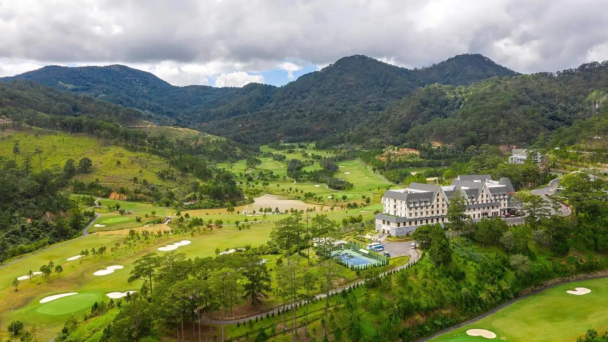
4. Những khách sạn, resort bên Hồ Tuyền Lâm có view đẹp và không gian nghỉ dưỡng lý tưởng
Là một trong những địa điểm du lịch nổi bật của Đà Lạt, Hồ Tuyền Lâm không chỉ thu hút bởi cảnh quan thiên nhiên thơ mộng mà còn sở hữu nhiều resort và khách sạn cao cấp nằm sát hồ, với tầm nhìn tuyệt đẹp, không gian yên bình – lý tưởng để nghỉ dưỡng, trốn khỏi sự ồn ào của phố thị.
Dưới đây là một số gợi ý lưu trú gần Hồ Tuyền Lâm được du khách đánh giá cao:
-
Đà Lạt Wonder Resort
📍 19 Hoa Hồng, Phường 4, Đà Lạt
✅ Resort 4 sao với kiến trúc Châu Âu, sát hồ, có hồ bơi ngoài trời, khu vui chơi trẻ em và dịch vụ xe đạp đôi dạo quanh hồ. -
Terracotta Hotel & Resort Đà Lạt
📍 Phân khu chức năng 7.9, KDL Hồ Tuyền Lâm, Phường 3, Đà Lạt
✅ Khu nghỉ dưỡng nổi bật giữa rừng thông, có villa riêng biệt hướng hồ, nhà hàng sang trọng, dịch vụ spa thư giãn và cảnh hoàng hôn tuyệt đẹp. -
Sam Tuyền Lâm Resort
📍 Phân khu 7 & 8, Hồ Tuyền Lâm, Phường 3, Đà Lạt
✅ Thiết kế đậm chất miền quê châu Âu, khuôn viên rộng lớn, yên tĩnh, gần sân golf và các điểm tham quan quanh hồ. -
Khách sạn Dalat Luxury
📍 156 Bùi Thị Xuân, Phường 2, Đà Lạt
✅ Gần trung tâm nhưng di chuyển đến Hồ Tuyền Lâm rất thuận tiện. Giá cả hợp lý, phòng tiện nghi, phù hợp với khách du lịch gia đình hoặc cặp đôi. -
Khách sạn Melody Đà Lạt
📍 29A Đường 3 Tháng 4, Phường 3, Đà Lạt
✅ Vị trí thuận lợi, cách Hồ Tuyền Lâm chỉ vài phút di chuyển. Phù hợp với khách đi du lịch kết hợp công tác hoặc du lịch ngắn ngày.
💡 Tip: Nếu bạn đang tìm nơi nghỉ dưỡng có thể nghe tiếng chim hót mỗi sáng, ngắm sương mù lững lờ trên mặt hồ thì hãy ưu tiên các resort ngay sát Hồ Tuyền Lâm để có trải nghiệm tuyệt vời nhất!
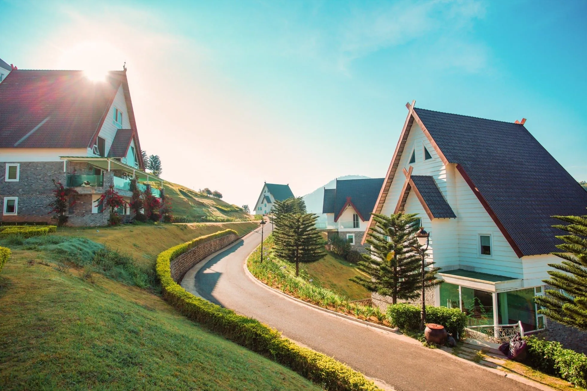
5. Ăn gì ở khu vực Hồ Tuyền Lâm? Những nhà hàng, quán ăn ngon không nên bỏ lỡ
Không chỉ là điểm tham quan hấp dẫn, Hồ Tuyền Lâm Đà Lạt còn có nhiều nhà hàng, quán ăn đậm chất địa phương phục vụ các món đặc sản hấp dẫn. Đây là nơi lý tưởng để bạn thưởng thức ẩm thực trong không gian thiên nhiên trong lành.
Một số địa chỉ ăn uống đáng thử:
-
Kim Định Quán
📍 Phường 4, Đà Lạt
👉 Quán ăn gia đình lâu năm, nổi tiếng với món cá suối chiên giòn, cơm lam, thịt nướng ống tre. -
Chung Hoa Quán
📍 Phường 4, Đà Lạt
👉 Không gian mộc mạc, đồ ăn đậm chất Tây Nguyên như bò một nắng, gà nướng muối ớt, rau rừng xào tỏi. -
Thùy Dương Family Restaurant
📍 Hoa Cẩm Tú Cầu, Phường 3
👉 Nhà hàng thích hợp cho gia đình, phục vụ lẩu cá tầm, gà tiềm sâm, món ăn sạch – ngon – hợp khẩu vị nhiều du khách. -
Nhà hàng Đá Tiên
📍 Hoa Phượng Tím, Phường 4
👉 View hướng thẳng ra Hồ Tuyền Lâm, phục vụ các món ăn Việt truyền thống và cà phê sân vườn.
Ngoài ra, đừng quên check-in tại các quán cà phê view hồ như Pini Coffee, Đợi Một Người, hay The Seen House Café – nơi bạn có thể vừa nhâm nhi cà phê nóng, vừa ngắm cảnh hồ tĩnh lặng trong tiết trời se lạnh rất đặc trưng của Đà Lạt.
6. Gần Hồ Tuyền Lâm có gì chơi? Những địa điểm du lịch nên kết hợp tham quan
Khu vực quanh Hồ Tuyền Lâm là nơi tập trung nhiều địa điểm du lịch nổi tiếng, phù hợp để kết hợp tham quan trong 1 ngày hoặc nửa ngày. Dưới đây là những điểm đến nổi bật:
-
Thiền viện Trúc Lâm
👉 Một trong những thiền viện lớn và đẹp nhất Việt Nam. Nằm trên đồi Phượng Hoàng, từ đây bạn có thể nhìn xuống toàn cảnh Hồ Tuyền Lâm thơ mộng. -
Khu du lịch Lá Phong
👉 “Nhật Bản thu nhỏ” giữa lòng Đà Lạt, nổi bật với rừng phong chuyển sắc, hồ cá Koi, và kiến trúc độc đáo. -
Đường hầm Điêu Khắc
👉 Khu du lịch mô phỏng lại lịch sử Đà Lạt qua các công trình đất sét điêu khắc, rất thích hợp để check-in chụp hình. -
Thác Datanla
👉 Nơi dành cho người yêu mạo hiểm: máng trượt xuyên rừng, đu dây vượt thác, đi zipline… chỉ cách hồ khoảng 4km. -
Thung lũng Tình Yêu
👉 Điểm đến lãng mạn với nhiều tiểu cảnh đẹp mắt, vườn hoa và các khu vui chơi thích hợp cho cả gia đình.
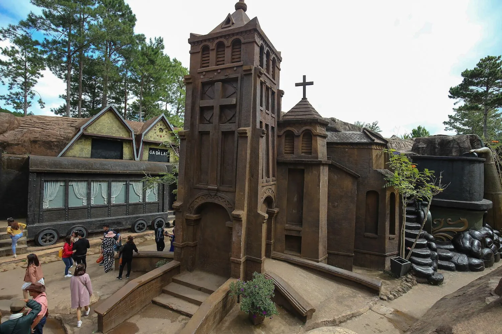
7. Một số thắc mắc thường gặp khi du lịch Hồ Tuyền Lâm
7.1. Hồ Tuyền Lâm có cáp treo không?
✅ Có. Du khách có thể ngắm cảnh Hồ Tuyền Lâm từ trên cao bằng cáp treo Robin Đà Lạt – kết nối từ Đồi Robin tới khu vực gần Thiền viện Trúc Lâm.
-
Địa chỉ: Đồi Robin, Phường 3, Đà Lạt
-
Giờ mở cửa: 07:30 – 17:00
-
Giá vé: 80.000 – 100.000 VNĐ/người
Chuyến đi bằng cáp treo sẽ cho bạn một góc nhìn toàn cảnh Hồ Tuyền Lâm từ trên cao – trải nghiệm đáng thử ít nhất một lần khi đến Đà Lạt.
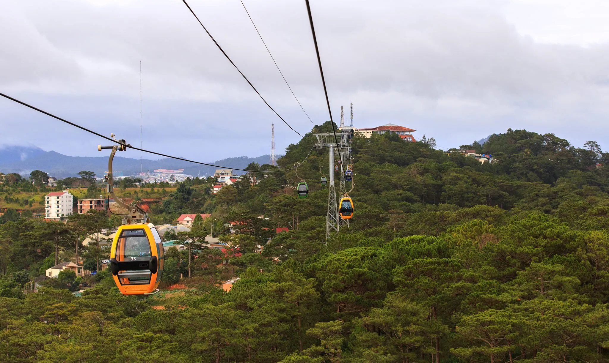
7.2. Ở khu vực Hồ Tuyền Lâm có cứu hộ không?
✅ Có. Khu du lịch Hồ Tuyền Lâm có ban quản lý và đội ngũ cứu hộ túc trực thường xuyên, đảm bảo an toàn cho du khách, đặc biệt là trong các hoạt động như chèo SUP, kayak hoặc tắm hồ.
📌 Gợi ý: Nếu bạn đi nhóm đông người, đặc biệt là có trẻ nhỏ, nên mang theo áo phao cá nhân và tuân thủ hướng dẫn an toàn khi tham gia các hoạt động dưới nước.
8. Gợi ý tiệm nướng cực chill gần Hồ Tuyền Lâm

Sau khi dạo chơi, ngắm cảnh tại Hồ Tuyền Lâm, bạn đừng quên ghé qua Tiệm Nướng & Chill Xóm Lèo để tiếp thêm năng lượng. Quán nổi bật với không gian gần gũi, view thiên nhiên thoáng đãng, ngắm hoàng hôn, săn tàu lửa cùng thực đơn nướng đa dạng, đậm chất Đà Lạt. Với phong cách phục vụ thân thiện và món ăn chế biến hấp dẫn, đây chắc chắn là điểm dừng chân lý tưởng cho bữa tối ấm cúng bên bạn bè và người thân.
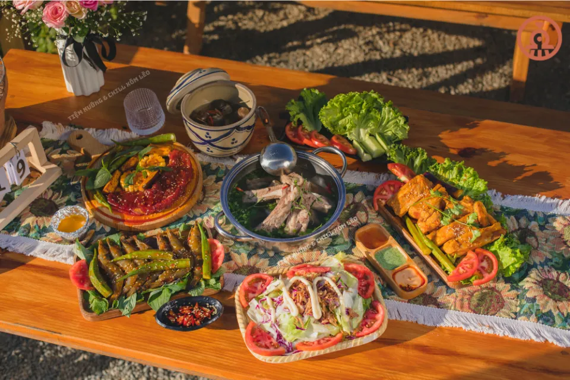
📌 Địa chỉ: 113 Huỳnh Tấn Phát, Phường 11, Đà Lạt, Lâm Đồng 67000
📌 Inbox: Tại Đây
📌 Google Maps: Xem Đường Đi
📌 Hotline: 076.45.27.336 – 08.99.42.84.34 – 0902.91.22.40
Hồ Tuyền Lâm không chỉ khiến du khách mê mẩn bởi vẻ đẹp sơn thủy hữu tình mà còn mang đến hàng loạt trải nghiệm đáng nhớ — từ chèo thuyền, cắm trại, săn ảnh cho đến khám phá những điểm đến tâm linh và văn hóa đặc sắc. Và sau một ngày dài vi vu giữa thiên nhiên, đừng quên ghé Tiệm Nướng & Chill Xóm Lèo gần khu vực hồ để thưởng thức những món nướng thơm lừng trong không gian ấm cúng, chill chill giữa thời tiết se lạnh đặc trưng của Đà Lạt. Tất cả sẽ tạo nên một hành trình đáng nhớ, khiến bạn chỉ muốn quay lại Hồ Tuyền Lâm thêm nhiều lần nữa.